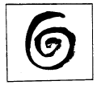
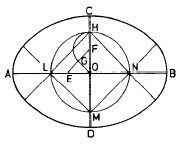
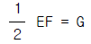
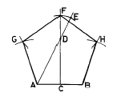
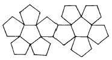

목공예기능사 (2001-10-14 기출문제)
1과목: 공예디자인
1. 빨강과 노랑의 수채화 물감을 혼합한 결과는?
- 명도, 채도가 높아진다.
- 명도, 채도가 낮아진다.
- 채도는 낮아지나 명도는 높아진다.
- 명도는 낮아지나 채도는 변함없다.
(정답률: 69%)

2. 다음 그림과 같은 소용돌이 선에서 얻을 수 있는 가장 큰 느낌은?

- 부드러움
- 고상함
- 점잖음
- 불명료
(정답률: 96%)
3. 무운·스펜서 조화론에서 20색상환 중 어떤 하나의 색을 기준으로 할 때 조화 되는 색상차는?
- 색상차 1
- 색상차 2
- 색상차 3
- 색상차 4
(정답률: 75%)
4. 관리 책임자의 주관 하에 실시되는 부정기적 점검은?
- 임시 점검
- 정기 점검
- 수시 점검
- 일상 점검
(정답률: 100%)
5. 도막결성 성분을 용해하는 용제로서 적당하지 않는 것은?
- 석유계
- 알콜계
- 물
- 동물성기름
(정답률: 96%)
6. 장축과 단축이 주어진 타원 그리기에서 작도의 조건이 아닌 것은?


- FH = OF
- AE = CO
- OE = OF
(정답률: 77%)
7. 목기의 안쪽을 다듬을 때 알맞은 조각칼은?
- 굽은 삼각칼
- 굽은 평칼
- 굽은 둥근칼
- 굽은 창칼
(정답률: 90%)
8. 다음 공예제도에 관한 설명 중 틀린 것은?
- 도면은 될 수 있는대로 간단명료 하게 그리는 것이 좋다.
- 외형선은 굵은 실선으로 표시 하여야 한다.
- 치수는 모두 ㎝의 단위를 사용하는 것이 원칙이다.
- 치수는 반드시 실제의 치수를 기입하여야 한다.
(정답률: 100%)
9. 목재에서 수액이 가장 적으며 건조가 빠르고 목질도 견고해 벌목하기 좋은 시기는?
- 봄, 여름
- 여름, 가을
- 가을, 겨울
- 겨울, 봄
(정답률: 100%)
10. 중복되는 부재를 마름질 할 때 올바른 작업 방법은?
- 그므개로 하나씩 금긋기 한다.
- 부재의 마구리면을 맞추고 죔쇠로 조인후 금긋기 한다.
- 조합자로 직각 금긋기를 한다.
- 직각자로 자유롭게 금긋기를 한다.
(정답률: 97%)
11. 다음 중 일반적으로 사개 맞춤기법을 사용하지 않는 것은?
- 통만들기
- 사방탁자
- 문갑
- 책상다리
(정답률: 96%)
12. 조선시대의 목칠공예 중 사랑방 가구에 속하지 않는 것은?
- 고비
- 책장
- 버선장
- 경상
(정답률: 100%)
13. 다음 중 아르누보 양식의 특징은?
- 유동적인 곡선
- 연한 색채
- 단순한 직선
- 온화한 색채
(정답률: 96%)
14. 다음 배색 중 채도차가 가장 큰 것은?
- 빨강,회색
- 녹색,노랑
- 파랑,자주
- 주황,연두
(정답률: 80%)
15. 목재의 함수율 공식을 바르게 표기한 것은?
- (생재중량 + 전건중량)/전건중량 ÷ 100
- (건조전중량 + 전건용적)/전건용적 × 100
- (생재중량 - 전건중량)/전건중량 ÷ 100
- (건조전의 중량 - 전건중량)/전건중량 × 100
(정답률: 88%)
16. 끌의 크기는 무엇으로 정하는가?
- 끊는날의 폭
- 끌목의 길이
- 끌의 길이
- 손잡이의 길이
(정답률: 95%)
17. 건조에 따른 목재의 변형을 방지하고 넓은 널을 얻을 수 있는 맞춤 방법은?
- 주먹장 맞춤
- 쪽매 맞춤
- 반턱 맞춤
- 홈 맞춤
(정답률: 91%)
18. 목재, 합판 등의 접착제로서 내수성, 내열성이 큰 합성 수지계 접착제는?
- 폴리에스테르수지
- 아크릴게 수지
- 멜라민수지
- 요소수지
(정답률: 65%)
19. 대체로 명쾌한 성격을 가지고 있는 것이 특징인 형태는?
- 유기적 형태
- 우연적 형태
- 불규칙 형태
- 기하학적 형태
(정답률: 85%)
20. M.D.F.의 특징이 아닌 것은?
- 밀도가 높아 대패질이나 부조가 가능하다.
- 목재의 재질과 같이 무늬결도 성형되어 있다.
- 나사못이나 못을 박을 때에 갈라지지 않는다.
- 부드러운 섬유질로 되어 있어 표면이 매우 평활하다.
(정답률: 90%)
2과목: 목공예재료
21. 다음 조각도 중에서 가장 많이 쓰이는 칼로서 파내거나 베는데 쓰이는 것은?
- 평도
- 환도
- 삼각도
- 인도
(정답률: 79%)
22. 목재의 접착조건 중 접착층의 두께는 어느 정도가 제일 좋은가?
- 0.01mm
- 0.06mm
- 0.2mm
- 0.6mm
(정답률: 96%)
23. 조각도에 관한 설명 중 잘못된 것은?
- 조각도는 예리한 날 끝으로 되어 있으므로 손을 다치지 않도록 주의한다.
- 무딘 날은 자주 갈아 쓰고 날끝이 상하지 않도록 한다.
- 용도에 따라 조각도는 적합한 것을 골라 사용 한다.
- 둥근 조각도는 곡면 숫돌을 사용하면 날 세우는 시간이 오래 걸린다.
(정답률: 96%)
24. 다음 변재와 심재를 설명한 것 중 올바른 것은?
- 같은 목재에서 심재는 짙은 색이고, 변재는 엷은 색이다.
- 심재는 봄,여름에 자란 것이고, 변재는 가을에 자란 것이다.
- 변재는 음지쪽에서 자랐고, 심재는 양지쪽에서 자랐다.
- 같은 목재에서 심재는 엷은 색이고, 변재는 짙은 색이다.
(정답률: 78%)
25. 다음 중 중유성 니스로 가구나 건축, 차량 등 내부 상칠용으로 가장 적합한 니스는?
- 골드사이즈
- 보디니스
- 스파아니스
- 코우펄니스
(정답률: 85%)
26. 안전 점검을 하는 큰 목적은?
- 안전 관리 기준에 위배되는지 조사하는데 있다.
- 위험한 부분을 발견하여 미리 시험하는데 있다.
- 모든 장비의 안전 설계를 조사하는데 있다.
- 안전의 생활화를 꾀하는데 있다.
(정답률: 73%)
27. 도장을 중지하여야 하는 경우가 아닌 것은?
- 습도가 80% 이상일 때
- 온도 5℃ 이하일 때
- 심한 바람이 부는 날
- 도장 바탕의 함수율이 15% 이하인 목재
(정답률: 85%)
28. 목재를 구성하는 유기성분으로 제지, 인견 등의 원료로 쓰이는 화학적 성분은?
- 셀룰로오즈
- 헤미셀룰로오즈
- 리그닌
- 회분
(정답률: 92%)
29. 다음 목재 중 비중이 0.31 정도이고, 심재는 백색 혹은 엷은 갈색이며, 경도가 낮아 가공이 용이하여 가구재, 기구재, 악기재 등으로 널리 사용되는 목재는?
- 밤나무
- 단풍나무
- 오동나무
- 떡갈나무
(정답률: 93%)
30. 다음 중 공예디자인의 직접 조건에 속하는 것은?
- 시대성
- 민족성
- 유행성
- 기능성
(정답률: 92%)
31. 낙랑문화의 특징과 대표적인 것은?
- 선가신앙, 유교사상이 표현된 채화칠협
- 굽이 높은 고배형의 토기
- 섬세한 입사무늬의 동경
- 누금세공법에 의한 순금공예
(정답률: 70%)
32. 래커 바탕칠에 관한 다음 사항 중 틀린 것은?
- 프라이머는 바탕과의 부착이 잘 되게 한다.
- 퍼티는 프라이머 면에 바탕의 요철을 고르고 건조 후 연마하여 평활하게 한다.
- 서어피서는 칠한면을 평활하게 하는것으로 백색도 있다.
- 희석제로 에나멜 신너를 약간 혼합해서 사용한다.
(정답률: 87%)
33. 다음 중 가장 따뜻한 느낌을 주는 배색은?
- 파랑과 노랑
- 빨강과 파랑
- 노랑과 빨강
- 황록과 파랑
(정답률: 91%)
34. 색의 진출, 후퇴감에 대한 설명 중 잘못된 것은?
- 난색계는 한색계 보다 진출성이 있다.
- 명도가 높은 색은 팽창성이 있고 낮은 색은 수축성이 있다.
- 채도가 높은 것에 비하여 낮은 것이 진출성이 있다.
- 배경색과 명도차가 큰 밝은 색은 진출성이 있다.
(정답률: 74%)
35. 건조한 목재를 수증기 중에 방치하면 수분은 세포막에 흡수되는데 이때 더 이상 흡수할 수 없는 한계에 이를 때의 함수율은?
- 섬유포화점
- 기건함수율
- 섬유한계점
- 전건상태
(정답률: 81%)
36. 평행 투시도는 소점이 몇개 인가?
- 1소점
- 2소점
- 3소점
- 4소점
(정답률: 63%)
37. 목재를 건조시키면 좋아지지 않는 것은?
- 내구성
- 접착성
- 도장성
- 흡습성
(정답률: 87%)
38. 목재의 인장 강도에 대한 설명 중 올바른 것은?
- 섬유결 방향이 가장 작고 직각 방향이 가장 크다.
- 섬유결 방향이 가장 크고 직각 방향이 가장 작다.
- 섬유결 방향이나 직각 방향이 똑같다.
- 목재에 따라 섬유결 방향이 클수도 작을수도 있다.
(정답률: 74%)
39. 띠톱 기계 사용에 관한 설명 중 잘못된 것은?
- 띠톱날은 톱니 방향을 맞추어 먼저 아래 바퀴에 걸고 윗바퀴에 건다.
- 윗바퀴 오르내림 핸들을 오른쪽으로 돌려 톱날을 알맞게 당긴다.
- 띠톱날 안내 바퀴와 띠톱날 등과의 간격은 1∼3mm 정도로 조정해야 한다.
- 오려내기가 끝날 무렵에는 목재를 세게 누르지 말고 오려간다.
(정답률: 91%)
40. 실톱 기계는 어떤 때 많이 사용하는가?
- 가는 선이나 오려 내는 부분의 세공 때
- 두꺼운 합판을 자를 때
- 판재를 자를 때
- 원목을 심재와 변재로 나눌 때
(정답률: 82%)
3과목: 목공예
41. 연한 목재를 대패질 할 때의 알맞은 속도는?
- 속도를 빠르게 한다.
- 속도를 천천히 한다.
- 속도를 아주 느리게 한다.
- 속도를 빨리와 천천히를 반복시킨다.
(정답률: 92%)
42. 1변이 주어진 정5각형 작도 그림에서 DE의 길이는?

- AD/2
- AD/3
- AB/2
- CF/4
(정답률: 67%)
43. 목재 착색제 중 유성착색제(오일스테인)의 장점에 속하지 않는 것은?
- 침투성이 크다.
- 상벌칠도료의 흡수가 적다.
- 아교접착에 좋고 재면을 보존시킨다.
- 수성 착색제 보다 건조가 빠르다.
(정답률: 63%)
44. 해칭선은 어떤선을 사용하는가?
- 굵은 실선
- 가는 실선
- 가는 일점쇄선
- 굵은 일점쇄선
(정답률: 78%)
45. 다음 중 대나무의 특성이 아닌 것은?
- 건습에 의한 수축이 적다.
- 탄력이 풍부하다.
- 무겁지만 강인하다.
- 저항력이 있다.
(정답률: 100%)
46. 다음 중 황색계에 속하는 나무는?
- 옻나무
- 오동나무
- 호두나무
- 삼나무
(정답률: 85%)
47. 다음 중 심리적으로 또는 시각적으로 가장 안정감을 주는 색채는?
- 녹색
- 파랑
- 흰색
- 빨강
(정답률: 95%)
48. 붓에 대한 설명 중 틀린 것은?
- 래커붓은 양털이 적합하다.
- 옷칠붓은 사람의 머리털을 사용한다.
- 니스붓은 페인트붓에 비하여 털의 두께를 두껍게 한다.
- 셀락붓은 주로 산양털이 사용된다.
(정답률: 86%)
49. 측정 기구의 용도에 대한 기술 중 잘못된 것은?
- 그므개 : 부재의 표면과 옆면에 평행선을 그을 때
- 직각자 : 가공 재료 및 제품 안과 밖의 직각을 점검하고 금을 그을 때
- 연귀자 : 35°금을 그을 때 및 톱질할 때
- 하단자 : 제품의 평면 및 직선상태를 점검하거나 직선을 그을 때
(정답률: 82%)
50. 제도에 사용되는 문자의 설명 중 올바른 것은?
- 문자는 명조체로 쓴다.
- 문자의 크기는 폭을 기준으로 한다.
- 문자는 수직 또는 15°오른쪽 경사로 쓰는 것을 원칙으로 한다.
- 숫자는 로마 숫자를 원칙으로 한다.
(정답률: 87%)
51. 도안에서 율동감을 얻기 위한 방법 중 가장 타당한 것은?
- 색이나 선을 반복하여야 한다.
- 균제적인 균형을 주어야 한다.
- 일부분을 특히 강조한다.
- 공간 설정을 조화있게 하여야 한다.
(정답률: 100%)
52. 톱질을 할 때 톱이 끼이는 원인이 아닌 것은?
- 당길 때 힘을 주지 않고 밀 때 힘을 주기 때문에
- 날어김이 적을 때
- 목재에 수분이 많을 때
- 톱에 무리한 힘을 가해 톱이 먹줄 밖으로 이탈 했을 때
(정답률: 74%)
53. 다음 그림과 같은 전개도는?

- 정 6각형
- 정 12면체
- 정 10면체
- 정 6면체
(정답률: 96%)
54. 단위 도안에 관한 설명 중 가장 올바른 것은?
- 도안화 하기 이전의 작업을 말한다.
- 도안을 구성하는 전체 요소를 말한다.
- 연속도안의 기본이 되는 도안이다.
- 자유무늬의 일부분이다.
(정답률: 79%)
55. 사물의 형태 전부를 생동감 있게 표현하는 기법은?
- 환조
- 양각
- 투각
- 음각
(정답률: 66%)
56. 다음 중 감산혼합이 아닌 것은?
- 빨강 + 파랑 = 보라
- 빨강 + 녹색 = 노랑
- 빨강 + 노랑 = 주황
- 노랑 + 파랑 = 녹색
(정답률: 64%)
57. 색의 3속성 중 무채색에 없는 것은?
- 채도,색상
- 채도,명도
- 명도,색상
- 명도,채도,색상
(정답률: 57%)
58. 대나무의 벌채시기가 가장 좋은 달은?
- 3-4월
- 6-7월
- 10-11월
- 12-3월
(정답률: 89%)
59. 띠톱기계(band saw)와 둥근톱기계(circular saw)를 사용하여 톱날 가까이까지 목재를 밀어 넣을 때에 안전한 방법은?
- 손으로 직접 밀어 넣는다.
- 장갑을 끼고 밀어 넣는다.
- 보조 막대로 밀어 넣는다.
- 톱날의 회전 속도를 줄인다.
(정답률: 90%)
60. 목재의 곧은결방향 : 무늿결방향 : 섬유방향의 일반적인 수축비는?
- 40 : 10 : 1
- 30 : 10 : 1
- 20 : 10 : 1
- 10 : 10 : 1
(정답률: 97%)